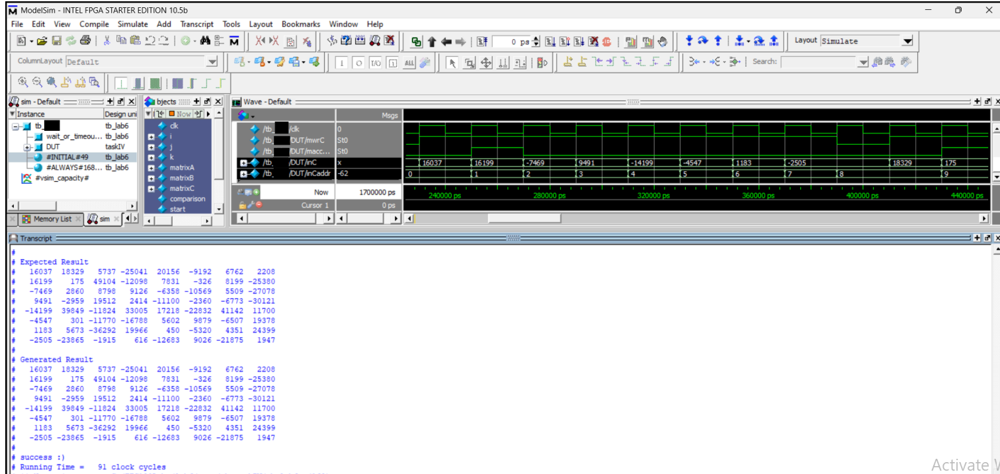

Digital Design • Verilog • FPGA-Oriented Architecture
Matrix Multiplier
Verilog-Based Matrix Multiplication System
A digital hardware design project implementing matrix multiplication using FSM control logic, datapath design, memory interfaces, and ModelSim verification.

Project Snapshot
Hardware matrix multiplication architecture
FSM design • Datapath logic • Simulation testing
Memory-driven multiply-accumulate architecture
Cycle-based operation, RAM access, and verification
Problem → Goal → Solution
Implementing matrix multiplication as digital hardware.
Matrix multiplication is a computationally intensive operation commonly used in signal processing, graphics, machine learning, and numerical computing.
The goal of this project was to design a hardware-oriented matrix multiplication system using Verilog, rather than relying on software execution.
The final design used a finite state machine to control memory reads, multiplication, accumulation, and result storage, with simulation used to verify correct behavior.
Engineering Highlights
Key technical pieces of the digital system.
FSM Control Logic
Designed a controller to sequence memory reads, multiply-accumulate operations, and result writes.
Datapath Design
Built datapath logic for multiplication, accumulation, index tracking, and output generation.
Memory Interface
Managed RAM access patterns for matrix inputs and result storage during computation.
ModelSim Verification
Verified timing, control states, and output correctness through waveform simulation.
Development Timeline
From block diagram to verified simulation results.
Architecture Planning
Defined the top-level matrix multiplier architecture, including controller, datapath, and memory blocks.
FSM Design
Designed the finite state machine responsible for sequencing read, compute, and write operations.
Datapath Implementation
Implemented multiply-accumulate logic and counters needed to compute matrix output elements.
Simulation & Debugging
Used ModelSim waveforms to inspect control signals, memory outputs, and computation timing.
Result Verification
Validated that the matrix multiplier produced the expected output values after completing operation.
Engineering Gallery
Architecture diagrams, control logic, and simulation results.
The matrix multiplier was designed as a hardware system with a controller, datapath, memory interfaces, and verification workflow. The design process included block diagram planning, control logic development, RTL implementation, and waveform-based debugging in ModelSim.
{kind=link}
{kind=link}
{kind=link}
Lessons Learned
What this project taught me as a digital designer.
This project strengthened my understanding of how control logic and datapath design work together in hardware systems.
I gained experience writing Verilog RTL, designing finite state machines, debugging timing behavior, reading waveforms, and verifying hardware outputs through simulation.